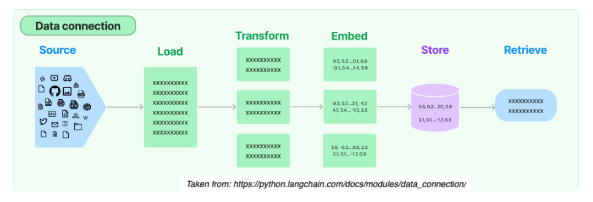

Retrieval Augmented Generation#
Retrieval Augmented Generation (RAG) is a powerful paradigm in natural language processing that combines the strengths of information retrieval and language generation. This approach involves retrieving relevant information from a large dataset and using that information to enhance the generation of accurate text.
The phrase Retrieval Augmented Generation comes from a recent paper by Lewis et al. from Facebook AI. The idea is to use a pre-trained language model (LM) to generate text, but to use a separate retrieval system to find relevant documents to condition the LM on.
Sample Uses Cases#
Question Answering Systems or Conversational Agents:
Retrieve information from vast knowledge bases, such as multiple pdf or csv files, and incorporate into response.Context Creation:
Enhance the generation of informative text by pulling in relevant details from a wide range of sources.Code Generation:
Assist in generating code snippets by retrieving information from programming knowledge bases.Prevent Hallucinations:
Bring in external knowledge to check whether a GPT response is a hallucination.
How it Works#
From start to finish, the RAG relies on 5 steps: 
1. Load
Load documents from different source files (url, csv, pdf, txt) in diverse locations (s3 storage, public sites, etc.)
2. Transform
Prepare larger documents for retrieval by creating splits or chunks the data.
3. Embed
Create embeddings for documents to capture the semantic meaning of the text. This later enables models to efficiently find other pieces of text that are similar.
4. Store
Vector stores support efficient storage and search of document embeddings.
5. Retrieve
Relevant information is retrieved to produce more informed and context-aware responses.
During runtime, this blending of retrieval and generation enhances the richness and relevance of the generated content.

Taken from: https://docs.llamaindex.ai/en/stable/_static/getting_started/basic_rag.png
Example: Retrieving Information Non-existent in Training#
One way to use RAG is to feed the LLM with up-to-date information.
The Llama 2 was trained between January 2023 and July 2023. The Mistral 7B model was released in September 2023. Let’s ask LLama2 a question about the Mistral 7B model.
# Run the query through Llama2 7B chat model with test_llama2.py
query = "[INST]How can I use tranformers to call the Mistral 7B instruct model?[/INST]"
Output:
[INST]How can I use tranformers to call the Mistral 7B instruct model?[/INST]
To use Transformers to call the Mistral 7B instruct model, you can follow these general steps:
Install the necessary dependencies: You will need to install the
transformerslibrary and any other dependencies required by the model you want to use.Load the model: You can use the
transformers.BertModelclass to load the Mistral 7B model. For example:from transformers import BertModel model = BertModel.from_pretrained('mistral-7b-base-uncased')
Prepare the input: You will need to prepare the input for the model. This can involve tokenizing the text, padding it to the appropriate length, and converting it to a format that the model can understand.
Call the model: You can use the
model.predict()method to call the model on a given input. For example:input_text = 'This is a sample input text.' input_ids = tokenizer.encode(input_text, return_tensors='pt') attention_mask = tokenizer.encode(input_text, return_tensors='pt', max_length=512, padding='max_length', truncation=True) output = model(input_ids, attention_mask)
Interpret the output: Once you have called the model, you can interpret the output in a way that makes sense for your use case. For example, you could use the output to generate a summary of the input text, or to perform some other task that requires understanding natural language.
Note that the specific details of how to use the Mistral 7B model will depend on the implementation of the model and the library you are using. You may need to consult the documentation
The huggingface page for Mistral 7B Instruct model can be found here.
We can use RAG to feed up-to-date information. The code below will take the contents of a webpage and follow the 5 steps outlined above to retrieve the relevant information.
# Load libraries
from pathlib import Path
import logging
import sys
from llama_index.core import VectorStoreIndex, SimpleDirectoryReader
from llama_index.core import StorageContext, load_index_from_storage
from llama_index.core.node_parser import SentenceSplitter
from llama_index.llms.huggingface import HuggingFaceLLM
from llama_index.embeddings.huggingface import HuggingFaceEmbedding
from llama_index.vector_stores.faiss import FaissVectorStore
import faiss
import requests
from bs4 import BeautifulSoup
import time
import os
start_time = time.time()
# Save text from the url link
def prep_text(workdir, url_link):
response = requests.get(url_link)
soup = BeautifulSoup(response.content, 'html.parser')
webpage_content = soup.get_text().strip()
webpage_content = os.linesep.join([s for s in webpage_content.splitlines() if s])
data_path = workdir / "LlamaIndex_data"
if not data_path.exists():
data_path.mkdir()
txt_file = data_path / "webpage_content.txt"
with open(txt_file, "w") as f:
f.write(webpage_content)
# Perform RAG using LlamaIndex
def process_llamaindex(workdir, embedding_name, embed_d, llm_model, query):
logging.basicConfig(stream=sys.stdout, level=logging.INFO)
logging.getLogger().addHandler(logging.StreamHandler(stream=sys.stdout))
embedding_chunk_size = 1024
embed_model = HuggingFaceEmbedding(model_name=embedding_name, max_length=512)
llm = HuggingFaceLLM(
context_window=4096,
max_new_tokens=1000,
tokenizer_name=llm_model,
model_name=llm_model,
device_map="auto",
)
PERSIST_DIR = workdir / "LlamaIndex_storage_faiss"
data_path = workdir / "LlamaIndex_data"
if not PERSIST_DIR.exists():
print("== Processing data ... ")
##############################
# 1. Load the documents
##############################
documents = SimpleDirectoryReader(data_path).load_data()
# Set up FAISS vector store
faiss_index = faiss.IndexFlatL2(embed_d)
vector_store = FaissVectorStore(faiss_index=faiss_index)
storage_context = StorageContext.from_defaults(vector_store=vector_store)
index = VectorStoreIndex.from_documents(
documents,
##############################
# 2. Transform
##############################
transformations=[SentenceSplitter(chunk_size=embedding_chunk_size)],
##############################
# 3. Embed
##############################
embed_model=embed_model,
##############################
# 4. Store
##############################
storage_context=storage_context
)
index.storage_context.persist(persist_dir=PERSIST_DIR)
print("== Finish saving vector store data ... ")
else:
print("== Storage exists. Loading data ...")
vector_store = FaissVectorStore.from_persist_dir(PERSIST_DIR)
storage_context = StorageContext.from_defaults(
persist_dir=PERSIST_DIR,
vector_store=vector_store,
)
index = load_index_from_storage(
transformations=[SentenceSplitter(chunk_size=embedding_chunk_size)],
embed_model=embed_model,
storage_context=storage_context,
)
print("== Finish loading ...")
##############################
# 5. Retrieve
##############################
query_engine = index.as_query_engine(llm = llm)
print(f"Selected LLM: {llm_model}")
response = query_engine.query(query)
print(f"Query: {query}")
print("Response: ")
print(response)
# Replace your_file_directory with your project directory string
file_dir = your_file_directory
workdir = Path(file_dir)
url_link = "https://huggingface.co/mistralai/Mistral-7B-Instruct-v0.2"
prep_text(workdir, url_link)
# Settings for embedding model
# embedding_name = "intfloat/multilingual-e5-large-instruct"
embedding_name = "/kellogg/data/llm_models_opensource/e5_infloat/models--intfloat--multilingual-e5-large-instruct/snapshots/baa7be480a7de1539afce709c8f13f833a510e0a"
embed_d = 1024 # embedding dimension
# Settings for LLM
LLAMA2_7B_CHAT = "/kellogg/data/llm_models_opensource/llama2_meta_huggingface/models--meta-llama--Llama-2-7b-chat-hf/snapshots/92011f62d7604e261f748ec0cfe6329f31193e33"
# LLAMA2_13B_CHAT = "/kellogg/data/llm_models_opensource/llama2_meta_huggingface/models--meta-llama--Llama-2-13b-chat-hf/snapshots/29655417e51232f4f2b9b5d3e1418e5a9b04e80e"
llm_model = LLAMA2_7B_CHAT
# llm_model = LLAMA2_13B_CHAT
query = "[INST]How can I use tranformers to call the Mistral 7B instruct model?[/INST]"
process_llamaindex(workdir, embedding_name, embed_d, llm_model, query)
Output:
Selected LLM: /kellogg/data/llm_models_opensource/llama2_meta_huggingface/models–meta-llama–Llama-2-7b-chat-hf/snapshots/92011f62d7604e261f748ec0cfe6329f31193e33
Batches: 0%| | 0/1 [00:00<?, ?it/s]
Batches: 100%|██████████| 1/1 [00:00<00:00, 63.51it/s]Query: [INST]How can I use tranformers to call the Mistral 7B instruct model?[/INST]
Response:To use transformers to call the Mistral 7B Instruct model, you can follow these steps:
Install the transformers library by running
pip install transformersin your terminal.Import the AutoModelForCausalLM and AutoTokenizer classes from the transformers library:
from transformers import AutoModelForCausalLM, AutoTokenizer
Load the Mistral 7B Instruct model using the
from_pretrainedmethod:model = AutoModelForCausalLM.from_pretrained("mistralai/Mistral-7B-Instruct-v0.2")
Use the
apply_chat_templatemethod to apply the instruction format to a given set of messages:messages = [ {"role": "user", "content": "What is your favourite condiment?"}, {"role": "assistant", "content": "Well, I'm quite partial to a good squeeze of fresh lemon juice. It adds just the right amount of zesty flavour to whatever I'm cooking up in the kitchen!"}, {"role": "user", "content": "Do you have mayonnaise recipes?"} ] encodeds = tokenizer.apply_chat_template(messages, return_tensors="pt") model_inputs = encodeds.to(device) model.to(device) generated_ids = model.generate(model_inputs, max_new_tokens=1000, do_sample=True) decoded = tokenizer.batch_decode(generated_ids) print(decoded[0])
Fine-tune the model by adjusting the hyperparameters or adding additional data to improve its performance.
Note: The
mistralainame is a placeholder for the actual model name, which you can replace with the name of your own model. Also, make sure to install the transformers library by runningpip install transformersin your terminal.
Sample scripts#
Sample scripts can be found at the scripts/rag folder of our github repo.